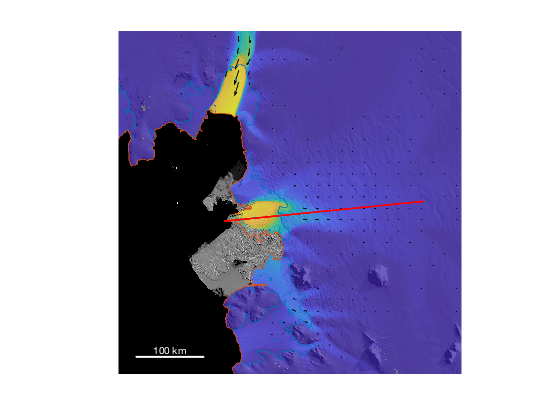
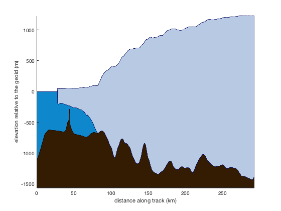
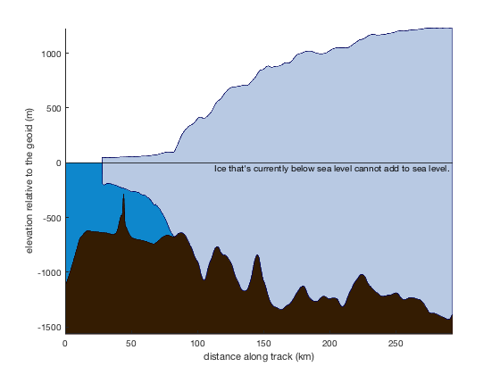
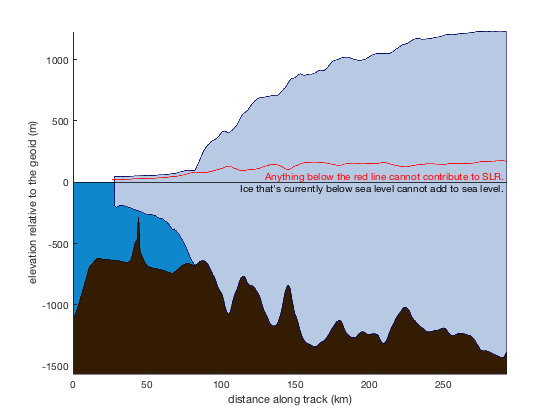
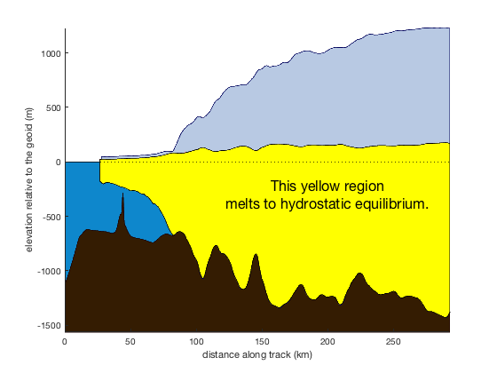
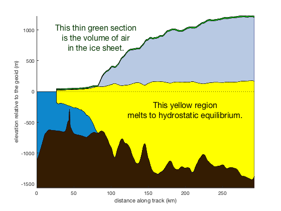
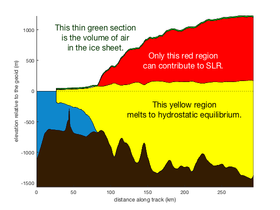
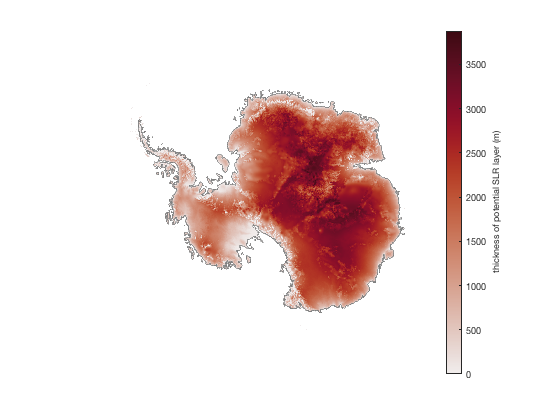

Antarctic Sea Level Rise
This tutorial describes some of the basic concepts in calculating Antarctica's potential contribution to sea level rise. It also shows how you can do it with Antarctic Mapping Tools for Matlab (Greene et al., 2017).
Key points in this tutorial:
- Not all Antarctic ice has the potential to affect sea levels.
- Only ice that's currently above sea level can possibly cause increased sea levels.
- Due to the fact that H2O changes density when it melts, and due to a significant volume occupied by air in Antarctica's snow/firn surface layer, some of the ice that is currently above sea level would not contribute to sea level rise if it melts.
- Despite these caveats, Antarctica still holds enough ice to raise global sea levels by about 58 m (190 ft).
- Remember when I said that not all ice in Antarctica can impact sea levels, and that we must only consider the ice that's currently above sea level? Well, there is one small correction to that statement, and its's related to how adding meltwater to the ocean affects the salinity and density of the ocean.
Let me know if I've missed anything.
-Chad A. Greene.
Contents
Thwaites Glacier
Here's a profile of Thwaites Glacier. Use pspath to make a path at 100 m spacing and plot on a map as a thick red line:
% Create a path between two points: [lat,lon] = pspath([-74.6 -77.2],[-106.7 -109],100); % Make a map of the region: mapzoomps 'thwaites glacier' % zooms a map measuresps('speed','alpha',0.75) % speed as semitransparent color measuresps('vel','k') % black velocity vectors modismoaps('contrast','low') % modismoa background image plotps(lat,lon,'r-','linewidth',2) antbounds('gl') % plots a grounding line antbounds('coast') % plots a coast line scalebarps('color','w') % adds a grapical reference scale axis off % removes axis tick labels
Profile view
A profile view along that red line looks like this. Plot the profile relative to path distance for convenience later on.
d = pathdistps(lat,lon,'km'); figure bedmap2_profile(lat,lon,'horiz',d) xlabel 'distance along track (km)' ylabel 'elevation relative to the geoid (m)'
Height above flotation
Not all of the ice in Antarctica has the potential to cause sea level rise. For starters, any ice that is currently below sea level can't possibly add to sea level when it melts, because when the ice goes away the void will just be filled by water.
Let's add a black dotted line at sea level to make it clear that any ice below this line cannot contribute to sea level:
hold on plot(xlim,[0 0],'k') text(d(end),0,'Ice that''s currently below sea level cannot add to sea level. ',... 'color','k','horiz','right','vert','top')
This is an interesting perspective, because we already see that half of the ice in this profile does not have the potential to contribute to sea level. Furthermore, the fact that the ice here is grounded below sea level gives Thwaites the potential to contribute to rapid sea level rise through marine ice sheet instability, yet, in this way of looking at it, the ice that's currently below sea level cannot contribute to sea level rise.
At first glance that may seem like a contradiction, but then again, it's actually quite straightforward and simple: Only ice that's currently above sea level can possibly add to the volume of the ocean and change sea level.
And actually, this truth is even more pronounced when you consider the fact that when ice melts, it changes density. Accounting for the density change means determining the volume of water required to fill the space between sea level and the submarine bed. Then we convert that volume of water to the equivalent volume of ice.
The density conversion we need to do here is functionally equivalent to determining the freeboard height of an iceberg from its base elevation, where in this case the base is the known bed topography. AMT has a base2freeboard function to do exactly that, but I'll also show how you can do it yourself if you prefer a DIY approach:
% Get elevations of ice surface and base: sfz = bedmap2_interp(lat,lon,'surface'); base = sfz - bedmap2_interp(lat,lon,'thickness'); % Get the freeboard level corresponding to base elevation: fb = base2freeboard(base,'rhow',1030); % Or you can calculate the freeboard height yourself: rho_ice = 917; % (kg/m^3) density of ice rho_sw = 1030; % (kg/m^3) density of seawater fb = -base*rho_sw/rho_ice + base; % Plot freeboard height: plot(d,fb,'r') text(d(end),100,'Anything below the red line cannot contribute to SLR. ',... 'color','r','horiz','right','vert','top')
One thing that's important to note in the figure above is that even though the ice below sea level can't contribute to sea level rise, the shape and depth of the bedrock topography far below sea level still have a significant impact on the volume of ice that can contribute to sea level. That's because the shape of the bed controls the freeboard height. By extension, wherever the bedrock elevation is unknown, we also can't know how much sea level potential exists there, even if the surface elevation is known with great accuracy.
Here it is a little more bluntly:
% Get indices of finite (non-NaN) values: isf = isfinite(fb); % Plot the finite region as a patch object: patch([d(isf),fliplr(d(isf))],[base(isf),fliplr(fb(isf))],'y'); % Plot zero elevation once again: plot(xlim,[0 0],'k:') % Label: text(200,-300,{'This yellow region';'melts to hydrostatic equilibrium.'},... 'fontsize',16,'horiz','center')
Firn correction
The red freeboard line in the figure above represents the surface of a hydrostatically floating iceberg whose base matches the topography of the ice sheet base. If it weren't for the weight of the overlying ice holding it down, it would just be a giant, barely-floating iceberg that would have no effect on sea level if it were to melt. Only the volume of ice above the red line matters to sea level rise.
But there's still one more big thing to account for. The firn and snow near the upper surface of the ice contains lots of air. That air can't contribute to sea level rise either. The total sum of all the air in the ice column is called the firn air content or (more ambiguously) the firn correction. If you remove all the air from the ice sheet, the resulting surface of the ice would be a bit lower than the observed surface, and it would look like this (Using Le Brocq's ALBMAP data for the firn correction).
sfz_corrected = sfz - albmap_interp('firn',lat,lon); plot(d,sfz_corrected,'color',rgb('dark green'))
The green line above indicates where the surface of the ice would be if you could suck out all of the ice sheet's air and be left with nothing but pure ice of constant density (about 917 kg/m^3). In theory it should line up exactly with the freeboard line on the ice shelf, and then the two lines would diverge at the grounding line, but the Bedmap2 and ALBMAP datasets were generated under slightly different assumptions, so there's a little bit of mismatch.
% Get indices of finite (non-NaN) values: isf = isfinite(sfz_corrected); % Plot the finite region as a patch object: patch([d(isf),fliplr(d(isf))],[sfz_corrected(isf),fliplr(sfz(isf))],'g',... 'facecolor',rgb('green')); % Label: text(80,630,{'This thin green section';'is the volume of air';'in the ice sheet.'},... 'fontsize',16,'horiz','center','color',rgb('dark green'),... 'vert','bottom','horiz','center')
Now we can see the volume of ice near Thwaites that really can affect sea level. To deal with the slight mismatch between the freeboard height and firn-corrected surfaces, let's just find the index of the last time fb is greater than sfz_corrected:
ind = find(fb>=sfz_corrected,1,'last');
From that index, build a patch object bounded by fb and sfz_corrected:
patch([d(ind:end),fliplr(d(ind:end))],... [fb(ind:end),fliplr(sfz_corrected(ind:end))],'r'); text(200,500,{'Only this red region ';'can contribute to SLR. '},... 'color','w','fontsize',16,'horiz','center')
Pan-Antarctic map of sea level potential
The profile-view example above makes it clear that sea level potential exists wherever there is ice between the firn-corrected surface elevation and the freeboard height corresponding to the ice sheet bed. Let's calculate that using Bedmap2 data, and use ALBMAP for the firn correction:
[X,Y,sfz] = bedmap2_data('surface','xy'); fac = albmap_interp('firn',X,Y); % (m) firn air content sfz_corrected = sfz - fac;
In the profile example above we didn't encounter any bits of land where the bed elevation is above sea level, so we we didn't have to worry about any nonphysical freeboard heights. But there is some bedrock above sea level in Antarctica, and wherever that is the case we can simply let the bottom of the SLR-potential-ice layer be the bed elevation.
bed = bedmap2_data('bed'); rho_sw = 1030; % kg/m^3 density of seawater used by Fretwell et al. freeboard = base2freeboard(bed,'rhow',rho_sw); % Account for bedrock above sea level: freeboard(bed>=0) = bed(bed>=0);
We now have the firn-corrected surface elevation and the freeboard height (or bedrock elevation where it's above sea level). The SLR potential exists between the two layers:
% Thickness of the layer of ice that can contribute to SLR: SLR_thickness = sfz_corrected - freeboard; % Mask out everything except grounded ice: mask = bedmap2_data('icemask'); SLR_thickness(mask>0) = NaN; % Fix negative values around steep topography: SLR_thickness(SLR_thickness<0) = 0; figure h = imagesc(X(1,:),Y(:,1),SLR_thickness); h.AlphaData = isfinite(SLR_thickness); % makes NaNs transparent axis xy image off cb = colorbar; ylabel(cb,'thickness of potential SLR layer (m)') cmocean amp % optional red colormap antbounds('gl','color',.5*[1 1 1])
Calculate Antarctica's total SLR potential
Converting the thickness of the SLR-potential layer to meters of sea level rise is now just a matter of summing up grid cells and converting units. Start by converting to cubic meters, meaning we need to multiply the thickness of the ice layer in each grid cell by the area of each grid cell (1000^2 m). Then convert cubic meters of ice to the mass of ice, then mass to sea level potential:
% Total ice volume available for SLR, in cubic meters: TotalSLRVolume = sum(SLR_thickness(:)*1000^2,'omitnan'); % Total ice mass available for SLR (kg): rho_ice = 917; % kg/m^3 density of ice TotalSLRmass = TotalSLRVolume*rho_ice; % Convert mass to Gt, and then to impact on SLR in meters: SLR_m_per_Gt = .001/362; % (m/Gt) sea level potential per Gt water (or ice) from Meier et al. 2007 SLR = (TotalSLRmass*1e-12)*SLR_m_per_Gt
SLR =
56.44
Correcting for ocean salinity effects
The number above suggests that Antarctica's sea level potential is about 56.4 m. This is lower than the 58.3 m value reported in the Fretwell et al. 2013 paper, and there's an interesting reason why: Melting ice dilutes ocean water. The associated changes in salinity don't affect ocean mass, but do affect ocean density, as described by Jenkins and Holland, 2007. We could be very fancy about this and use their time-dependent solution (their equation 17), but since we're making so many approximations here, let's just stick with their equation 1, which amounts to about a 3% correction factor.
The first thing to note is that this effect applies to ALL of Antarctica's ice, because the total volume of melted ice is what affects sea salinity. So all those statements above, where I said that only the ice presently above sea level matters to sea level potential, well I should have included this asterisk: Ice that's below sea leve, and even ice shelves that are floating in hydrostatic equilibrium, affect sea level when they melt, because they change the ocean's salinity and density. To account for this, we can't just apply the correction to the SLR value we calculated above. Instead, we'll have to apply the correction to ALL of Anarctica's ice. That's easy enough to do by working on the ice thickness dataset. We'll put the ice thickness through the same series of conversions that we did with the sea-level-potential corrections above:
% Thickness of pure ice: th = bedmap2_data('thickness')-fac; % Sea level equivalent of all ice: SL_eq = sum(th(:)*1000^2,'omitnan')*rho_ice*SLR_m_per_Gt*1e-12; % Calculate salinity correction factor: rho_fw = 1000; % kg/m^3 density of fresh water CorrectionFactor = (rho_sw-rho_fw)/rho_sw; SLR_corrected = SLR + SL_eq*CorrectionFactor
SLR_corrected =
58.36
Now the 58.36 m value is approximately in agreement with the 58.3 m reported by Fretwell et al., 2013. Any small differences are likely due to differences in Ligtenberg's firn air content (used by Fretwell et al.) versus the ALBMAP values used here.
More corrections
The Fretwell et al 2013 paper clearly spells out a list of second-order effects that could also be important to sea level changes, but most of them are time-dependent, difficult to model, rely on many assumptions, or are just not well understood. So following Fretwell et al., I haven't included such second-order effects either. But in case you're curious about what you're missing out on, they include:
- crustal rebound,
- geoid modification,
- thermosteric modification of the oceans,
- other stuff?
Citing this tutorial
If this tutorial is useful for you, please cite my Antarctic Mapping Tools paper,
Greene, C. A., Gwyther, D. E., & Blankenship, D. D. Antarctic Mapping Tools for Matlab. Computers & Geosciences. 104 (2017) pp.151-157. doi:10.1016/j.cageo.2016.08.003.
And of course, also cite any data sources you use. This tutorial relied primarily on data from Fretwell et al and Le Brocq et al:
Fretwell, P., et al. "Bedmap2: improved ice bed, surface and thickness datasets for Antarctica." The Cryosphere 7.1 (2013). http://dx.doi.org/10.5194/tc-7-375-2013
Le Brocq, Anne M; Payne, Antony J; Vieli, Andreas (2010): An improved Antarctic dataset for high resolution numerical ice sheet models (ALBMAP v1). Earth System Science Data, 2(2), 247-260, https://doi.org/10.5194/essd-2-247-2010
Author Info
This file was written by Chad A. Greene, October 2018.